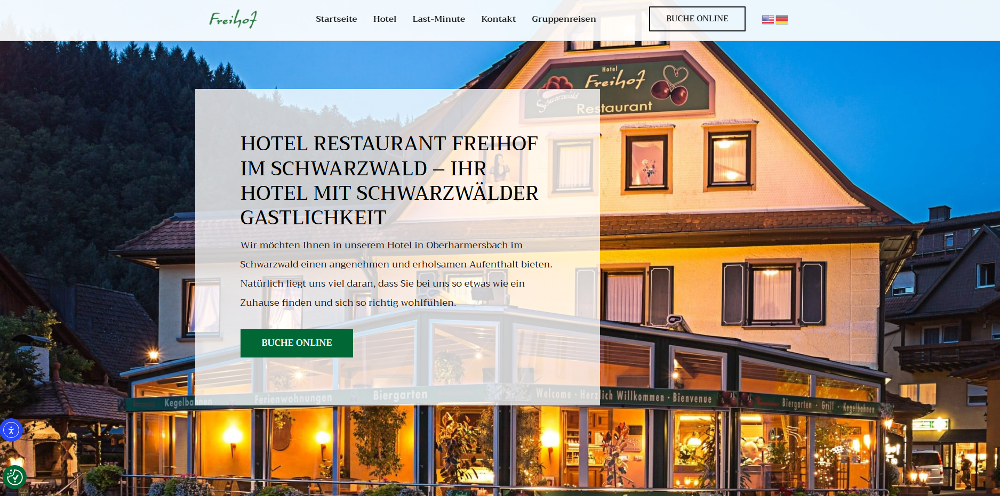

Когда я начинал в 2021 году, Elementor казался волшебством: перетащил блоки — и сайт готов. Но спустя пару десятков проектов я понял, что волшебство оборачивается проблемами.
На пятый похожий лендинг ты понимаешь: Elementor генерирует тонну лишнего кода, замедляет сайт и ограничивает креативность. Клиент ломает вёрстку одним лишним пробелом в текстовом блоке. Плагин конфликтует с другим плагином — и сайт падает.
Для простых лендингов под ключ и клиентов, которые сами будут править текст — конструкторы отличны. Но если проект требует уникального дизайна, сложных фильтров или интеграций, кастомная вёрстка окупается с первого месяца.